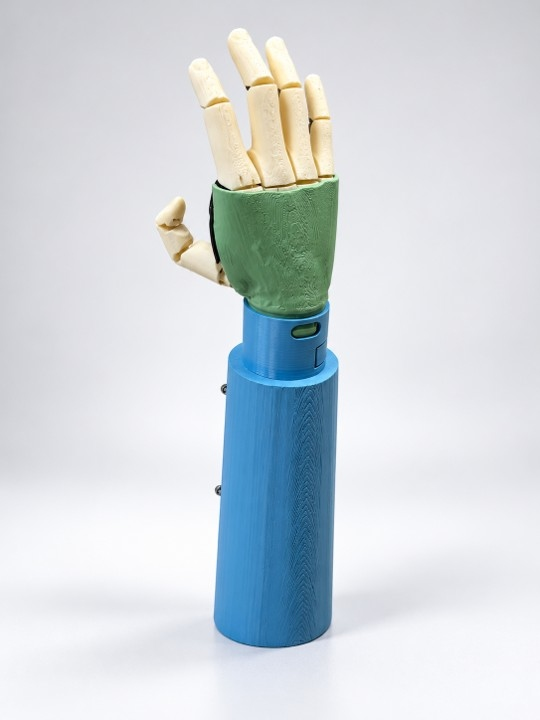
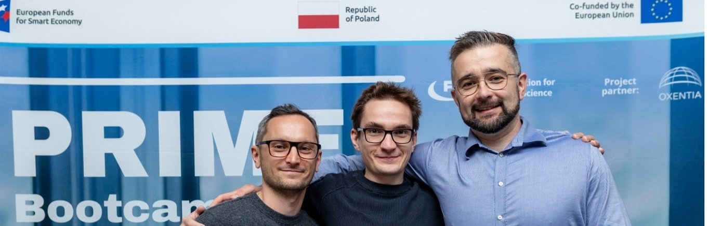

R&D begins
Research starts at Warsaw University of Technology.

As light as a passive hand, as functional as an active one.
I am interested in testingFor a child’s first active hand prosthesis, low weight and everyday usefulness come first. We are developing a lightweight bionic hand for children aged 7–14, with affordability and access through public reimbursement as design priorities.

Warsaw University of Technology · FNP PRIME
Swipe or scroll sideways to explore the roadmap. Future milestones are planned.
Research starts at Warsaw University of Technology.
60+ market interviews. One patent granted and two patent applications pending.
TRL 4 prototype. Preparation for the next development stage and a university spin-off.
Incorporate the company and develop a functional prototype.
Pilot study with partner clinics, subject to the necessary approvals.
Production prototype, EU MDR certification and first units on the market, subject to successful development and regulatory approval.
We would like to hear from clinics, prosthetists, potential users and parents or guardians interested in future prototype studies.
Fill in the interest formOpens Microsoft Forms in a new tab. This is an expression of interest, not enrolment in a study.